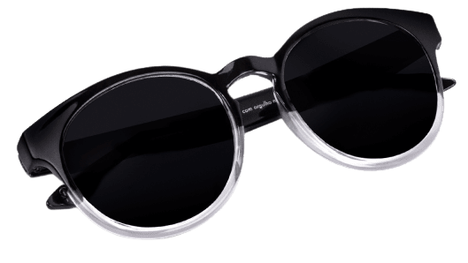

Nossos produtos
Trabalhamos com óculos de grau, óculos de sol, lentes transition nos modelos masculino, feminino e infantil.
Todos os nossos preços são acessíveis e contam com a melhor qualidade do mercado.
Óculos de grau

R$ 500,00
Óculos transition

R$ 750,00
Óculos de sol
R$ 700,00
Óculos infantil

R$ 500,00
Todos os nossos produtos incluem:
- Garantia de 1 ano
- Manutenção preventiva
- Descontos especiais na compra da segunda unidade
- Flexibilidade de pagamento